Thank you for visiting my personal site! I'm a hard-working and curious individual based in the greater
Phoenix area exploring the exciting world of technology. Through my time at Arizona State University, I
have experience with Java, SQL, Excel, and JavaScript; and I enjoy experimenting with tools like Canva,
Photoshop, and Premiere Pro. I like to use Python on my personal projects. While I’m still learning, I’m
eager to improve and take on challenges.
Outside of tech, I’m passionate about staying active with weightlifting, yoga, and sports (specifically
volleyball!). I also love brain teasers, listening to music, philosophy and ethics, diving into intricate
video essays and documentaries about almost anything, and exploring my creative outlets like digital art.
I'm big into video games, especially shooters.
I’m especially intrigued by topics like front-end, AI, cybersecurity, and product management, and I look
forward to growing my skills in these areas. I’m dedicated to putting in the effort to achieve my goals.
Feel free to check my social media links and connect with me on LinkedIn!
I'm looking for work opportunities in the tech field! Find out if I'm the right person for you!
Download a PDF version of my resume!Honors/dual enrollment high school graduate (4.63 GPA), Associate of Arts, Science, & General Studies at
Rio Salado College, and currently attending Arizona State University Tempe campus for Computer Information
Systems BS degree (3.80 GPA, Exp. Grad Aug. 2025). Statewide recognized athlete, YourValley published sports
reporter, completion of Advanced Digital Communications and Advanced Marketing CTE courses. Experience in
retail, management, food service, and customer service.
EDUCATION
W. P. Carey School of Business, Arizona State University | Expected Graduation Aug. 2025
Bachelor of Science, Computer Information Systems
GPA: 3.80
Rio Salado College | Deer Valley High School
Associate of Science, General Studies | High School Diploma
GPA: 3.90 | 4.63
PROFESSIONAL EXPERIENCE
Barista at Starbucks
Task: Maintain Starbucks' standards in a fast-paced environment.
Action: Efficiently handled orders, crafted beverages, and managed transactions.
Result: Cut wait times and fostered meaningful connections through exceptional performance.
Front Desk Representative at Esporta Fitness
Task: Promote membership upgrades and additional services to enhance member experience and revenue.
Action: Initiated conversations with members, highlighting the benefits of premium packages and amenities.
Result: Increased monthly membership upgrades and exceeded sales targets consistently.
Mobile and PC Sales Advisor at Best Buy
Task: Offer expert guidance and knowledge on mobile and PC products, ensuring customer satisfaction.
Action: Provided tailored recommendations based on thorough needs assessments and in-depth product knowledge.
Result: Established a reputation as a knowledgeable advisor, enhancing customer trust and driving sales success.
LEADERSHIP EXPERIENCE
Captain of Fusion Varsity Men’s Volleyball Club
AIA 4A Division Champions 3x
Sports360AZ All-Academic Boys Volleyball Team 2x
Student Government Class Officer
Actively planned, attended, and managed school events.
Created content for events using Canva and social media platforms.
Design and Photo Editor for Yearbook & Morning Announcements
Oversaw all design aspects, and maintained backups of photos and page spreads.
Wrote, photographed, and interviewed students for the school yearbook and online weekly newspaper.
Used Adobe Photoshop for basic photo editing and Balfour Studio to create page spreads.
Projects
Roblox Game Development
I used LUA and Blender to code logic and create textures. Generated 33,000 Robux (around $115 USD) in revenue.
Super Clicker
 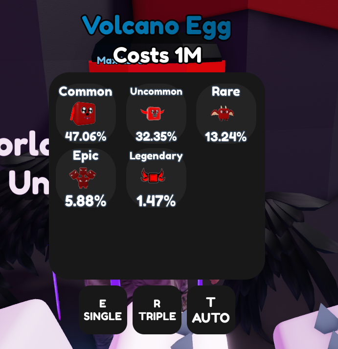
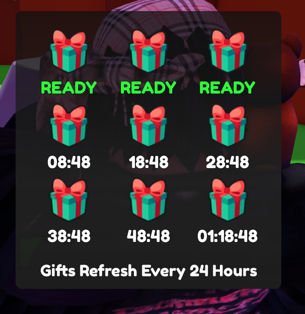
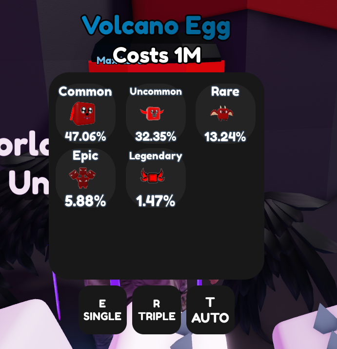
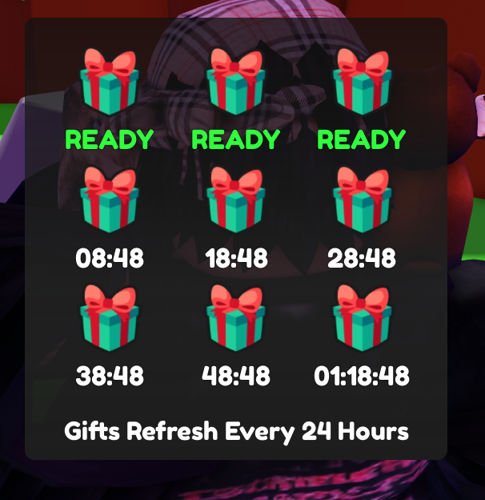
An incremental game where players earn money by clicking and upgrading pets for multipliers.
Play Super ClickerBloxRPG
 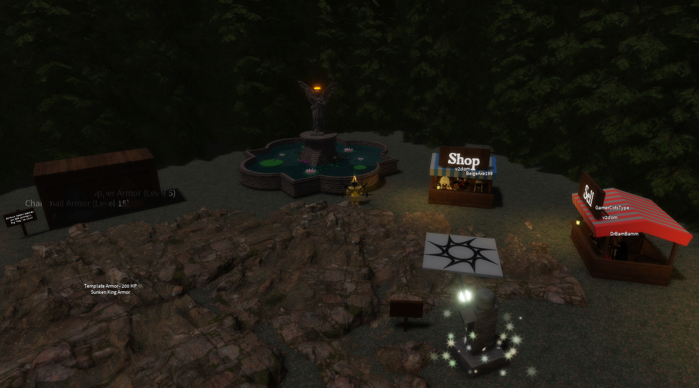
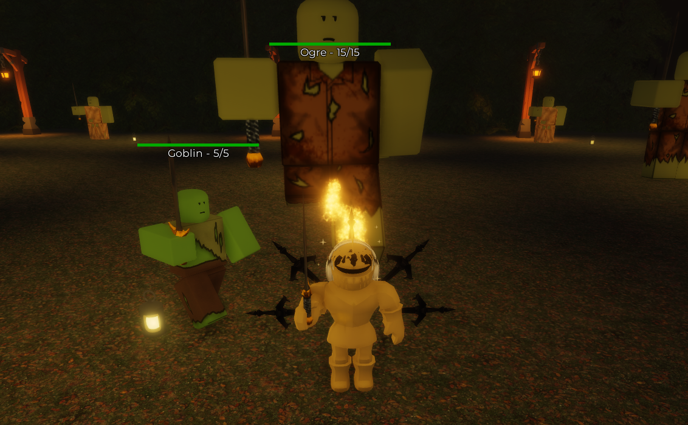
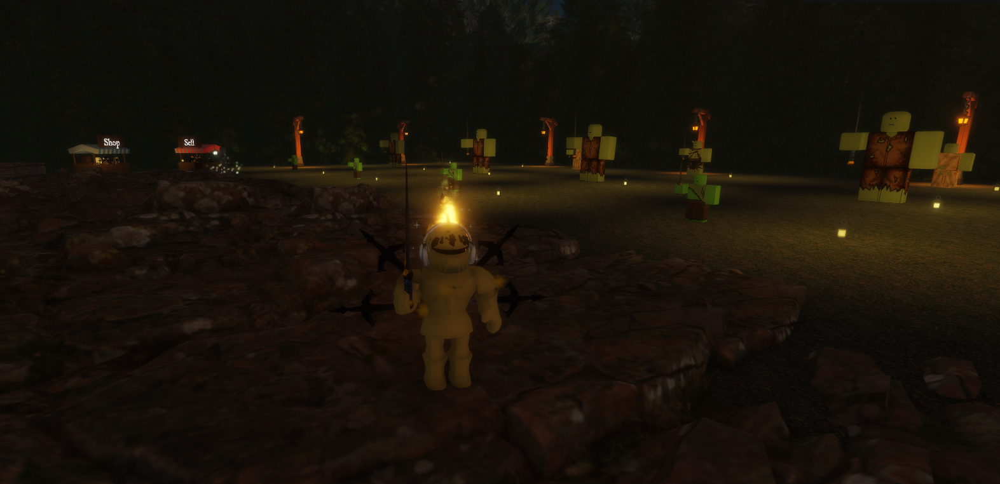
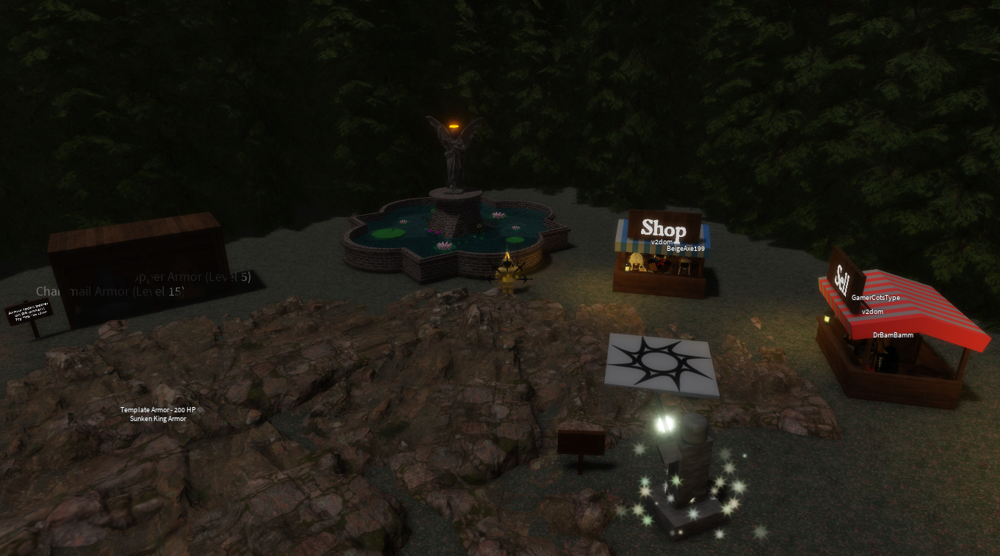
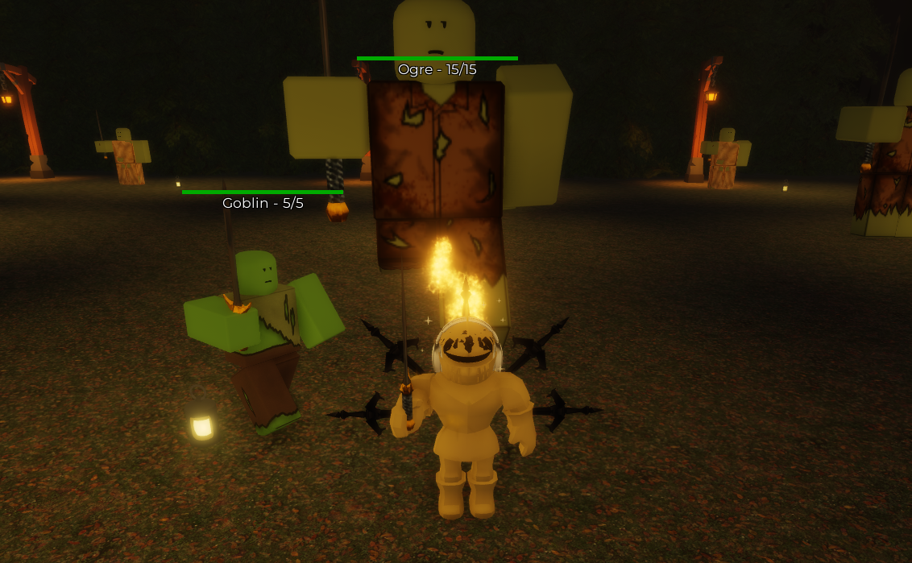
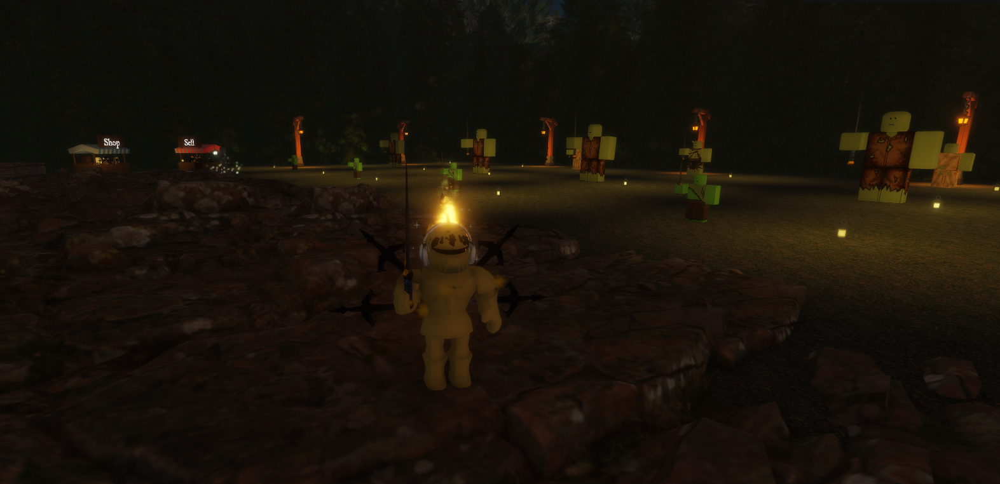

An incremental game where players defeat monsters to level up and become stronger.
Play BloxRPGGUESS THE LOGO!
 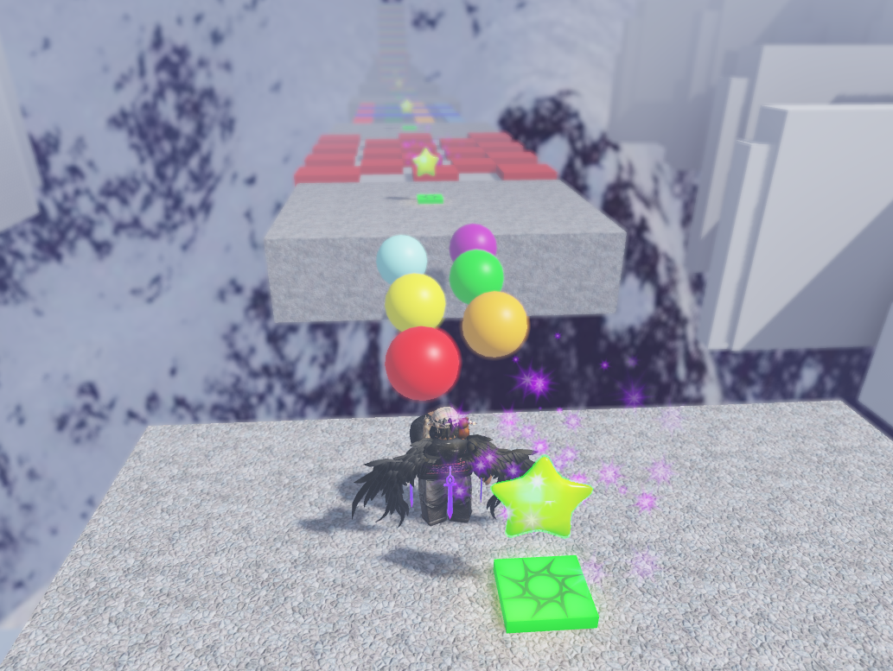
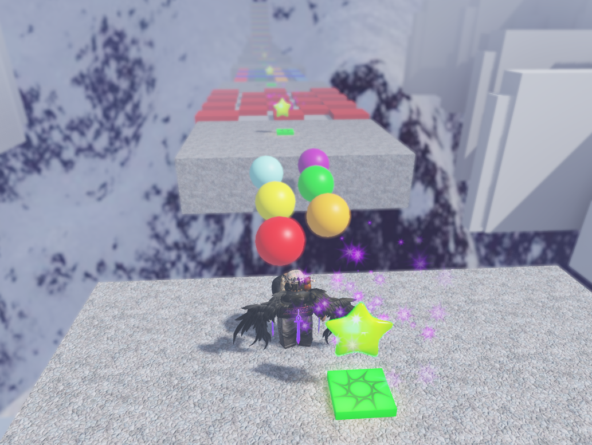
A fun Roblox game where players guess brand logos to progress through levels.
Play GUESS THE LOGO!Discord Development
As someone who is always at their computer, I like to use apps like Discord to keep in touch with my friends, stay social, and boost my productivity.

v2bron


Personal use Discord bot with automation, moderation, and entertainment commands.
Visit v2bron on GitHubCustom Discord Overlay
Lightweight overlay that shows active speakers and participants over a secondary monitor.
Music Controller Overlay

Personal use Rainmeter skin with YT/Spotify integration custom made for my touchscreen monitor.
Visit Music Controller Overlay on GitHubGet in touch with me!
📩 Email: dominick@v2dom.dev